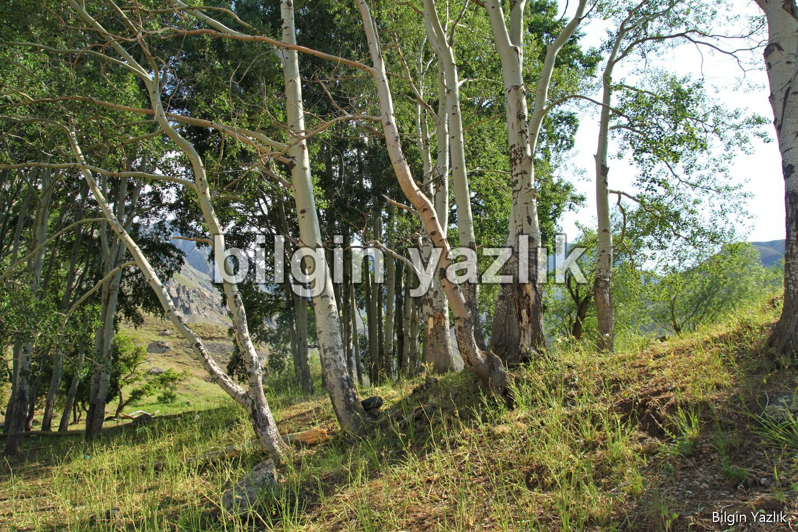
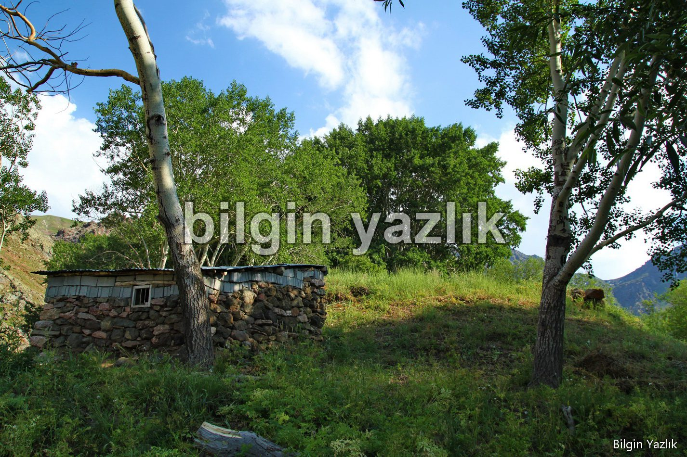
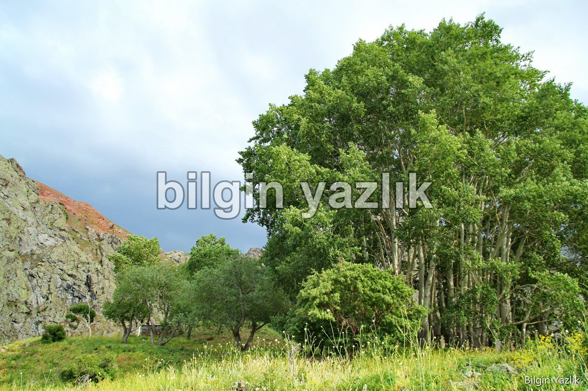
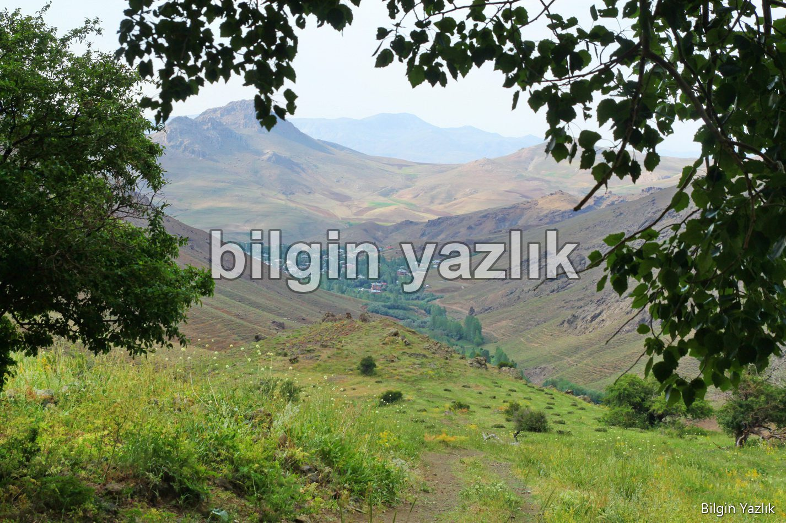

DARESİV
Değirmenköy’ün içerisinden geçen bir yolla ulaşılan bu bölge, halk tarafından Daresiv olarak adlandırılıyor içerisinde, tatlı su kaynakları, çok sayıda yaşlı kavak, söğüt ve elma ağacı barındırıyor. Zaten daresiv kelimesi de elma ağacı manasına geliyor.
Daresiv, Erek Dağı’nın saklı bir vadisinin tepesinde yer alıyor, Değirmenköyün güneyinde yer alan bölgeden çıkan tatlı su kaynakları birleşerek köyün içinden akan bir çay oluşturuyor.
Bölgede halkın kutsal olduğuna inandığı bir de mezar yer almaktadır, bu mezar bir oda haline muhafaza ediliyor ve insanlar bu kutsal mezarı ziyaret edip dilek diliyorlar.
Mezarın bulunduğu bölgede yaptığımız basit araştırmada çok sayıda seramik parçasına rastladık, ayrıca aynı bölgede sadece taş temelleri kalmış odalar görülmektedir. Bölgenin vadiye hakim bir noktada bulunması buranın eski çağlarda da kullanılmış olabileceğini göstermektedir.
İnsanların burayı kutsal kabul etmesi, geçmişte belki de bu bölgenin bir tapınak olabileceğini de düşündürmektedir.




Bu yazı taliyol arşivinden taşınmıştır. · özgün kayıt